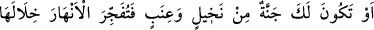
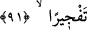
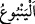

söylediğin gibi seni peygamber olarak gönderdiğini anlarız.”
Allah Resulü şöyle cevap verdi: “Ben bunun için gönderilmedim. Ben ancak
Allah’tan size beni kendisiyle gönderdiği şeyi getirdim. Kendisiyle gönderildiğim şeyi
size tebliğ ettim. Kabul ederseniz bu sizin dünya ve âhiretteki nasibinizdir.
Reddederseniz Allah’ın emrine sabrederim.”
Bunun üzerine şöyle dediler: “Bunu yapmıyorsan o zaman Rabbin’den seni tasdik
eden bir melek göndermesini, sana bahçeler, altın ve gümüşten hazineler ve saraylar
yapmasını, böylece seni başkalarına muhtaç olmaktan kurtarmasını iste. Çünkü sen çarşı
pazarda dolaşıyor, geçim te’mini için uğraşıyorsun.”
Hz. Peygamber (s.a.) şöyle cevap verdi: “Ben kesinlikle Rabbinden bunu isteyen biri
olamam. Size bunun için gönderilmedim. Ancak, Allah beni müjdeleyici ve uyarıcı
olarak gönderdi.”
Yine onlar: “O’ndan göğü üzerimize düşürmesini iste. Çünkü sen Rabbinin dilerse
bunu yapabileceğini iddiâ ediyorsun” dediler. Hz. Peygamber (s.a.): “Bu Allah’ın
bileceği bir iştir, dilerse yapar” diye karşılık verdi.
İçlerinden biri “Allah’ı ve melekleri topluca getirmedikçe sana asla inanmayız.” dedi.
Abdülmuttalib’in kızı Âtike’nin oğlu, yâni Hz Peygamber (s.a.)’in teyze oğlu -ki daha
sonra İslâm’a girmiş ve iyi bir müslüman olmuştur- Abdullah b. Ebî Ümeyye b.
Muğîre Mahzûmî ayağa kalktı ve şöyle dedi:
“Semâya merdiven dikip onunla göğe tırmanmadıkça ve ben sana bakıyor olduğum
halde beraberinde açık bir nüsha ve senin söylediğin gibi olduğuna şâhidlik eden bir
grup melekle birlikte bize geri gelmedikçe sana asla îman etmem.”
Bunun üzerine Allah Rasûlü (s.a.) onların yanından ayrıldı. Kavminin kendisinden
iyice uzaklaştığını görmesi sebebiyle artık onlarla konuşmayı devam ettiremediği için
üzgün bir şekilde âilesinin yanına gitti. Hemen ardından Allah Teâlâ şu âyeti indirdi:
“Onlar:” yâni Mekke müşrikleri ve ileri gelenleri “Sen, dediler, bizim için yerden”:
Mekke toprağından suyu bol, asla eksilmeyen “bir kaynak fışkırtmadıkça sana asla
inanmayacağız.”
“ ”, suyu bol, devamlı akan ve kesilmeyen kaynak demektir.
91. “Veya senin bir hurma bahçen ve üzüm bağın olmalı; öyle ki, içlerinden gürül
gürül ırmaklar akıtmalısın.”
“Veya senin bir hurma bahçen” ağaçları altındaki toprağı örten bahçeye ‘cennet’
denir “ve üzüm bağın olmalı; öyle ki, içlerinden” yâni o bahçelerin aralarından “gürül
gürül” kuvvetli bir şekilde “ırmaklar akıtmalısın.” Bu söz ile kasdedilen ya bu